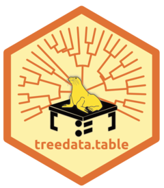
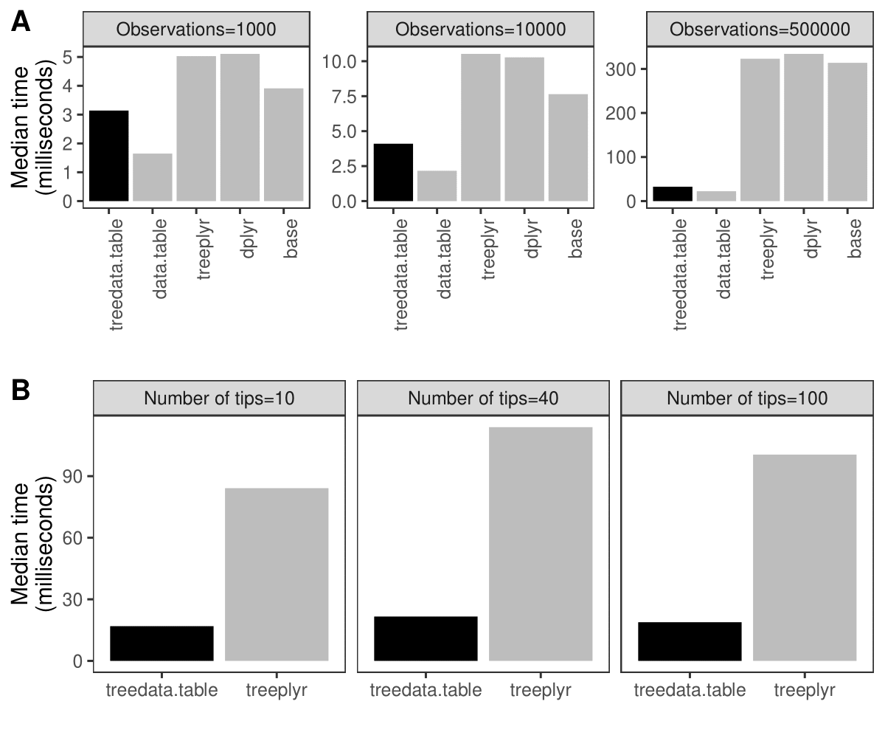

An R package for manipulating phylogenetic data with data.table
A wrapper for data.table that enables fast manipulation of phylogenetic trees matched to data. 
The data.table package enables high-performance extended functionality for data tables in R. treedata.table is a wrapper for data.table for phylogenetic analyses that matches a phylogeny to the data.table, and preserves matching during data.table operations.
Why use treedata.table?
Simultaneous processing of phylogenetic trees and data remains a computationally-intensive task. For example, processing a dataset of phylogenetic characters alongside a tree in treedata.table takes 90% longer than processing the data alone in data.table (Fig. 1A). treedata.table provides new tools for increasing the speed and efficiency of phylogenetic data processing. Data manipulation in treedata.table is significantly faster than in other commonly used packages such as base (>35%), treeplyr (>60%), and dplyr (>90%). Additionally, treedata.table is >400% faster than treeplyr during the initial data/tree matching step (Fig. 1B).

Fig. 1. Results for the treedata.table microbenchmark during (A) data manipulation (treedata.table[) and (B) tree/data matching steps. We compare the performance of treedata.table against treedata.table, base, treeplyr, and dplyr using the microbenchmark R package.
Installing treedata.table
treedata.table can be installed from CRAN or GitHub at the present. We presently recommend installing using remotes if using the GitHib version:
install.packages("treedata.table")
remotes::install_github("ropensci/treedata.table")
library(treedata.table)What Can I Do With treedata.table?
treedata.table is designed with the intention of being able to efficiently manipulate trait data and phylogenetic trees to enable comparative analyses. With the package is bundled some example data. Let’s load it in and look at some common analyses.
data(anolis)
td <- as.treedata.table(tree = anolis$phy, data = anolis$dat)The function as.treedata.table converts a normal comma- or tab-delimited file to the data.table format. This enables a range of efficient and intuitive indexing and selection operations.
Now, we’re going to use the tdt and extractVector functions in data.table. As an example, in our dataset is the column SVL, or snout-to-vent length in our anoles. We can index out this column on the fly, and run a Brownian motion analysis on this trait using the R package Geiger:
tdt(td, geiger::fitContinuous(phy, extractVector(td, 'SVL'), model="BM", ncores=1))We can also do efficient dropping of taxa from the analysis like so:
dt <- droptreedata.table(tdObject=td, taxa=c("chamaeleonides" ,"eugenegrahami" ))Additional resources
More details about the functions implemented in treedata.table can be found in the different vignettes associated with the package or in our website.
Contributing
Please see our contributing guide.
Contact
Please see the package DESCRIPTION for package authors.
Citation
Please use the following citation when using the package:
Josef Uyeda, Cristian Román-Palacios, and April Wright (2021). treedata.table: Manipulation of Matched Phylogenies and Data using ‘data.table’. Available at: https://cran.r-project.org/web/packages/treedata.table/